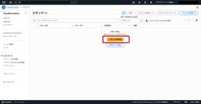
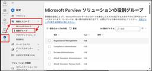
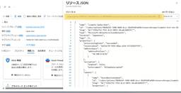
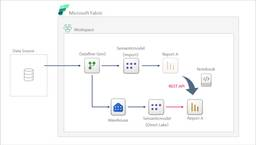
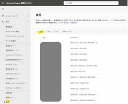
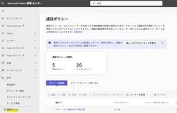
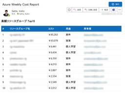
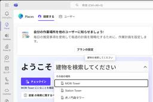

JBS Tech Blog
https://blog.jbs.co.jp/
JBS Tech Blogは、日本ビジネスシステムズ（JBS）の社員が分担して執筆を担当し、技術情報を発信しているブログです！Microsoft製品や生成AI関係の最新情報をはじめ、様々な製品やサービスの情報を幅広く公開しています。2022年3月より運用を開始し、毎営業日の1記事以上公開を継続中です！
フィード
VSCodeとGitHub Copilotで始めるテストデータ・ファイルの自動生成
JBS Tech Blog
ソフトウェア開発の品質を担保する上で、テスト工程は非常に重要です。しかし、テストの準備段階、特に「テストデータ」の作成に多くの時間と手間を費やしている現場は少なくないでしょう。例えば、アプリケーションが特定のファイルサイズを正しく扱えるか検証する閾値テストのために、「199MB」や「200MB」といった巨大なファイルを手作業で準備するのは大変です。 その他にも、長文テキスト入力の挙動を確認するために「10万文字以上のテキストファイル」が必要になったり、大量ページのドキュメント処理性能を測るために「2000ページ以上のPDFファイル」が必要になるケースもあります。 このような面倒なテストデータや…
1日前

CloudFormationを利用したSCPの作成と適用
JBS Tech Blog
AWSのアカウントやOUに対して一括でサービスコントロールポリシー（以下、SCP）を適用したり、異なる組織に同じSCPを付与したい場合はありませんか。 今回は、CloudFormationを利用してSCPを付与するテンプレートの紹介と実例を紹介します。 CloudFormation テンプレート AWS公式ドキュメントの記載 CloudFormationテンプレート例 実践 CloudFormationのスタック作成 SCP適用確認 おわりに CloudFormation テンプレート AWS公式ドキュメントの記載 AWS公式ドキュメントでは、CloudFormationテンプレートのサンプル…
1日前

【Microsoft Purview】インサイダーリスク管理：分析レポートの利用に必要な権限
JBS Tech Blog
組織全体のデータガバナンスを支援するMicrosoft Purviewのインサイダーリスク管理機能。分析レポートの権限設定方法を詳述し、リスクの可視化をサポートします。
2日前

Azureテナント間の仮想ネットワークのリンク追加方法
JBS Tech Blog
本記事では、テナント間の仮想ネットワークのリンク追加方法についての設定手順を記載しました。 仮想ネットワークのリンクとは 前提条件 設定方法 仮想ネットワークのリソースIDを取得 仮想ネットワークのリンクを追加する まとめ 仮想ネットワークのリンクとは AzureプライベートDNSゾーンを作成後に仮想ネットワークをリンクすると、そのネットワーク内にホストされている仮想マシンが、プライベートDNSゾーンにアクセス出来るようになります。 learn.microsoft.com 前提条件 今回は、プライベートDNSゾーンと仮想ネットワークは異なるテナントに存在している事を想定しています。 そのため、…
2日前

【Copilot / Power Platform】ローコードでドキュメント翻訳を実装する方法と精度
JBS Tech Blog
PowerPointやWordのドキュメントをローコードで翻訳する際のアプローチを紹介。精度や実装難易度を比較しています。
2日前

【Microsoft Fabric】REST APIを使ったレポートのリバインド
JBS Tech Blog
Microsoft Fabricは、データの収集や処理、変換、リアルタイム分析、レポート作成などの機能を統合した企業向けのSaaS型プラットフォームです。 レポートを別のセマンティックモデルに切り替える際は、リバインドという操作をすることでレポートを再作成する必要がなくなり、切り替えにかかる工数や負担を軽減することができます。 今回はREST APIを使い、Importモードのセマンティックモデルに紐づいているレポートを、DirectLakeモードのセマンティックモデルへリバインドする方法について紹介します。 REST APIとは 構成図 Direct Lakeモードのセマンティックモデルの作…
2日前
生成AI活用のためのプロンプト設計：これだけは押さえたい5つの基本ポイント 1
1
JBS Tech Blog
生成AIで「思った通りの答え」が返ってこない――そんな経験はありませんか。 生成AIから最大の成果を引き出す鍵は、実は指示文＝プロンプトの書き方にあります。 本記事では、ChatGPT や Microsoft Copilot を使い始めたばかりの方向けに、今日から実践できるプロンプト設計の基本ポイントを５つに整理しました。 具体例とともに、生成AI初心者でもすぐに再現できるコツを分かりやすく解説します。 第1章：「プロンプト＝生成AIとの対話の設計図」として考える 改善前の例 ポイントを押さえた例 第2章：基本構造「Role・Instruction・Context・Output」を押さえる R…
2日前

Teams Phone自動応答へ複数の休日動作を設定する
JBS Tech Blog
Teams Phone機能である自動応答では、営業時間・営業時間外での着信動作はそれぞれ一つずつの設定が可能ですが、祝日・休日については日にちによって複数の着信動作を設定することができます。
3日前
【Microsoft 365】Multi-Tenant Organization（MTO）機能の概要
JBS Tech Blog
Microsoft 365のMulti-Tenant Organization（MTO）機能は、複数の組織を一元管理し、運用効率やセキュリティを向上させるソリューションです。特に大規模企業に最適です。
3日前
タイタニックの乗客生存予測モデルをFabricで作成してみた。（その３）
JBS Tech Blog
今回は、前回に引き続き、クレンジング済みデータを用いて機械学習モデルの作成を行い、、作成したモデルの精度評価の確認まで行います。 前回の記事「タイタニックの乗客生存予測モデルをFabricで作成してみた。（その2）」の続編となります。 blog.jbs.co.jp 機械学習モデルの作成準備 モデルの作成 モデル 性能検証モデルを使い精度の評価 訓練データを学習用と評価用に分割 分割後の学習用データ、評価用データを使って性能検証モデルを作成 作成した性能検証モデルの評価 まとめ 機械学習モデルの作成準備 データセットの作成のために訓練データとテストデータを分ける作業を実施します。 前回作成した、…
3日前
SharePoint agentsでxmlファイルを参照できるか試してみた
JBS Tech Blog
エージェントでサポートされていないファイルの種類もあるため、今回はサポートされていないxmlファイルを参照できるのか検証してみました。
3日前
Microsoft 365の認証方式にADCSを使用する方法
JBS Tech Blog
Microsoft 365（以下、M365）における認証方式の一つとして、証明書ベース認証（Certificate-Based Authentication：CBA）があります。特に、Active Directory 証明書サービス(Active Directory Certificate Services：以下、ADCS) の証明書を活用することで、ユーザーのログイン時にパスワードを使用せず、証明書によるセキュアな認証を実現できます。 本記事では、ADCSで発行したクライアント証明書を用いて、M365へのログイン認証を構成する手順を紹介します。 ※ ADCS構築方法については以下の記事をご確…
3日前

TeamsのRTT（リアルタイムテキスト）を使ってみる
JBS Tech Blog
Teams管理センターの通話ポリシーにしばらく前からRTT（リアルタイムテキスト）という設定項目が登場しました。今回はこの項目がどのような機能かを確認してみました！
4日前
【Microsoft×生成AI連載】【やってみた】Surveys(Frontier)を使ってみた
JBS Tech Blog
【Microsoft×生成AI連載】久保田です。今回はSurveys(Frontier)を利用し、アンケートの作成から分析まで実施してみました。 ※この記事の情報は2025/9/17時点のものです。 Microsoft 365 Copilotやエージェントに興味がある方など、様々な方に読んでいただきたい記事となっておりますので、是非ご覧ください。 これまでの連載 Surveys(Frontier)の概要 Surveys(Frontier)を利用してみた アンケートの作成 アンケートの共有 アンケートの結果確認・分析 利用シーンとメリット 利用シーン メリット 注意点 まとめ 今後に向けて おま…
4日前
【Copilot】エージェントからユーザーにメッセージを送る方法（Power Automate連携）
JBS Tech Blog
本記事では、Copilot Studioで作成したエージェントとPower Automateを組み合わせて、Microsoft Teamsにメッセージを送信する仕組みを構築します。 今回は、シフト情報を教えてくれるエージェントを作成しました。エージェントにシフト関連の質問を行い、そのままエージェントチャット内から、特定のメンバーにシフト交代の打診をTeamsに送信できます。裏側ではPower AutomateがTeamsへのメッセージ送信を自動処理しますが、ユーザーはその仕組みを意識する必要はありません。すべてエージェント内で完結するため、操作はシンプルです。 この仕組みを構築するための手順を…
5日前

Logic AppsとFunctionsでリソースグループ別コストTop10をメールで配信する方法
JBS Tech Blog
Azureのコストアラートは、指定したスコープや条件でコストを監視し、閾値を超過した際に通知する機能です。 しかし、この通知は実際または予測コストが閾値を超えたタイミングに限られ、定期配信ではありません。さらに予算は単一スコープで動作するため、複数のリソースグループを横断して消費コストを一覧化・比較することはできません。通知に含まれる情報も閾値超過の事実とトータルコストが中心で、リソースグループごとの内訳やタグ情報まで、整った形で得ることは難しいのが実情です。 そこで、サブスクリプション内のリソースグループを横断して相対的に高コストなリソースグループを定期的に把握し、通知できる仕組みが必要だと…
6日前

Microsoft Placesで建物を登録してみる
JBS Tech Blog
2024年12月からサービス開始した新機能Microsoft Placesでどんなことができるのかを検証しています。今回はPlacesにて勤務先として登録できる「建物」情報の登録方法を紹介します。
6日前

AI Builderのプロンプトを利用する
JBS Tech Blog
AI Builderは、Power Platformに統合されたAI機能で、ノーコードでAIを構築することができ、誰でも簡単にAIモデルを構築することができるツールです。 今回は、AI Builderのプロンプト機能についてご紹介します。 AI Builderのプロンプト プロンプトの利用方法 Power Apps、Power Automateの場合 Copilot Studioの場合 プロンプトを作成する 作成したプロンプトを実行する フローの作成 フローの実行 まとめ 参考サイト AI Builderのプロンプト AI Builderのプロンプトは、生成AIを活用して特定のタスクを実行する…
8日前
【Power BI】データモデル構築からレポート・ダッシュボード作成まで（データモデル編）
JBS Tech Blog
本記事では、Microsoft Fabricのウェアハウスに格納された売上・在庫・顧客データを活用し、Power BIで分析環境を構築する実践的なステップをご紹介します。 具体的には、データモデル（リレーションシップ）構築から始め、Power BI Serviceで「売上パフォーマンス」「在庫最適化」の2つの主要な分析レポートページを作成します。 さらに、作成したレポートから重要なKPIを抽出し、日次マネジメントダッシュボードを構築し、ビジネスの異常値をいち早く検知するためのアラート設定を行い、実際に通知が届くことまで確認を行います。 今回は、データモデル編としてデータモデルの構築とメジャーの…
8日前
【AWS re:Inforce 2025】AWSセキュリティーの進化
JBS Tech Blog
今回の記事では、少々前にはなりますが2025年6月16日~6月18日に開催されたAWS re:Inforce 2025で紹介された、AWSのセキュリティ系のサービスのアップデート内容について紹介します。 re:Inforceで発表された主な内容については以下リンクに記載しております。興味がある方はこちらもご参照ください。 AWS re:Inforce 2025 のまとめ: 主な発表 | Amazon Web Services ブログ AWS re:Inforceとは 脅威検知とレスポンス対応(TDR) どのように変わったか? 追加された機能 自動相関付け 攻撃パスの可視化 ネットワークとインフ…
9日前
【Microsoft×生成AI連載】【Microsoft 365 Copilot App】Copilot メモリとカスタム指示で作るあなただけのCopilot
JBS Tech Blog
Copilotを“自分仕様”にできる秘密、それがCopilotの個人設定に追加された「Copilot メモリ」と「カスタム指示」機能です。普段の業務で「毎回同じ説明を繰り返している」、「自分の意図をもっと正確に汲み取ってほしい」と感じることはありませんか？「Copilot メモリ」と「カスタム指示」の2つを組み合わせることで、Copilotは単なるAI支援ツールから“あなたの相棒”へと進化します。この記事では、それぞれの特徴や活用のコツを紹介していきます。
9日前
Microsoft Defender for Cloudの概要 ~CSPMとCWP~
JBS Tech Blog
オンプレミスや単一のパブリッククラウドの利用以外にもハイブリッドクラウドやマルチクラウド環境の利用が増加しています。この状況に伴い、各環境に対するセキュリティ対策もより求められています。 そこで、セキュリティ脅威に対するCNAPPであるMicrosoft Defender for Cloud（以下、Defender for Cloud）の概要と、その機能の一部であるCSPMとCWPについて説明します。 Defender for Cloudとは CSPMとは CSPMの概要 CSPMプラン CWPとは CWPの概要 CWPプラン CSPMとCWPの利用イメージ おわりに Defender for…
9日前
Copilotでユーザーデータの差分を自動抽出
JBS Tech Blog
普段の業務で、月次のユーザーデータを確認する際に「どこが変わったのか」「誰が追加されたのか」を手作業で探すのは、時間も手間もかかります。 この記事では、Microsoft Copilotを使ってCSVファイルを比較し、差分を自動抽出する方法をご紹介します。 今回使用するユーザーデータ Copilotでファイル差分を自動抽出する手順 使用するプロンプト ファイル差分を自動抽出する手順 まとめ 今回使用するユーザーデータ 今回は月次でユーザーデータが出力されるケースを想定し、ユーザーが3名記載されている先月のファイルと、ユーザーが2名追加されて5名記載されている今月のファイルを用意します。 そして…
9日前
Azure AutomationでFabric容量の自動停止を実現する方法
JBS Tech Blog
Azure AutomationでMicrosoft Fabric容量を自動停止する方法を解説。コスト削減のためのRunbook作成、スケジュール設定、PowerShellコードを詳しく紹介。
10日前
PCにプリインストールされているMicrosoftアプリのアンインストール
JBS Tech Blog
Microsoft 365 Apps for enterprise（以降、M365Apps）のOffice展開ツール（以降、ODT）による展開時、既存で利用しているOffice製品をアンインストールするための設定を構成ファイルに組み込みましたが、以下アプリがアンインストールされないということがありました。 OneDrive OneNote for Windows 10 今回は、PCにプリインストールされている上記2つのアプリの、コマンドによるアンインストール方法について記載します。 構成ファイル内のアンインストール要素 OneDriveのアンインストール OneNote for Windows…
10日前
Intuneを使用してWindows11のスタートメニューレイアウトを展開する
JBS Tech Blog
Windows10のスタートメニューレイアウトはタイル形式でしたが、Windows11ではピン留め形式に変更されました。また、スタートメニューレイアウトのフォーマットがXML形式からJSON形式に変更されています。 Windows10のスタートメニューレイアウト構成をIntuneの構成プロファイル管理されている方は、デバイス構成プロファイルの「スタートメニューのレイアウト」から設定されていたかと存じます。同じ設定項目でWindows11のスタートメニューレイアウトを構成しようとしてもフォーマットの違いにより設定が行えません。 本記事では、Windows11でのスタートメニューレイアウト構成をI…
10日前
Copilotでアンケートの自由記述を分析する方法
JBS Tech Blog
社内でアンケートを取った際に、自由記述欄に記載された内容をまとめるのが少し手間だなと感じることがあると思います。 そんなときにCopilotにアンケートの自由記述を分析してもらうことで、時間を有効活用することが可能です。 Copilotでは職場タブとWebタブの切り替えが可能ですが、どちらでも利用可能です。 本記事では、Webタブを使用した場合の生成方法を紹介します。 アンケートの準備 使用するプロンプト 生成までの手順 アンケート分析 使用するプロンプト 分析までの手順 まとめ アンケートの準備 今回は、分析に使用するアンケートもCopilotに作成してもらいます。 使用するプロンプト 使用…
10日前
GitHub Copilot Custom Chat Modesで独自エージェントを作成
JBS Tech Blog
Web開発やプログラミングの現場で急速に普及しているAI支援ツール「GitHub Copilot」では、2025年5月にリリースされたVisual Studio Code (VS Code) 1.101から、「Custom Chat Modes」という画期的な新機能が利用可能になりました。 この機能により、既存のAsk、Edit、Agentモード以外に、自分だけのオリジナルAIチャットモードを作成し、特定の目的に特化したAI体験を実現できるようになります。 本記事では、Custom Chat Modesの活用法を詳しく解説し、実際に「コードの解説専門AIモード」を作成・活用する方法をご紹介しま…
10日前